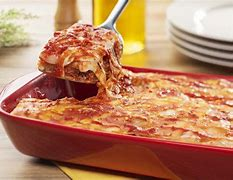

Lasanha à Bolonhesa  Ingredientes 500 g de massa de lasanha 500 g de carne moída 2 caixas de creme de leite 3 colheres de manteiga 3 colheres de farinha de trigo 500 g de presunto 500 g de mussarela Sal a gosto 2 copos de leite 1 cebola ralada 3 colheres de óleo 1 caixa de molho de tomate Modo de Preparo Em uma panela, refogue a cebola no óleo até dourar. Acrescente a carne moída e cozinhe até ficar bem dourada. Adicione o molho de tomate, sal e temperos a gosto. Em outra panela, prepare o molho branco: derreta a manteiga, adicione a farinha de trigo e mexa bem. Acrescente o leite aos poucos, mexendo até engrossar. Monte a lasanha em camadas alternadas de massa, molho bolonhesa, presunto, mussarela e molho branco. Repita as camadas até finalizar com o molho branco e queijo mussarela por cima. Asse no forno preaquecido a 180°C por cerca de 40 minutos ou até dourar. Sirva quente e bom apetite!